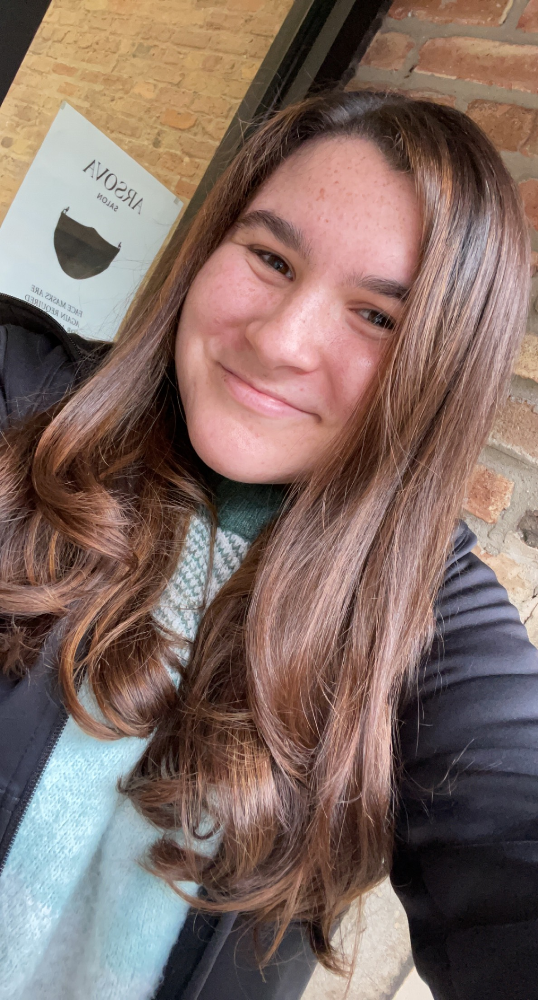
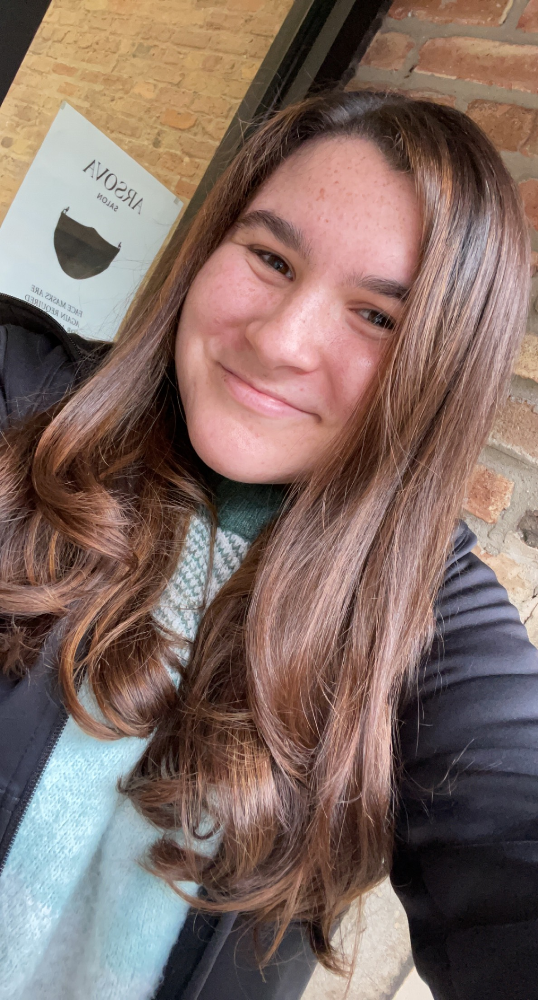
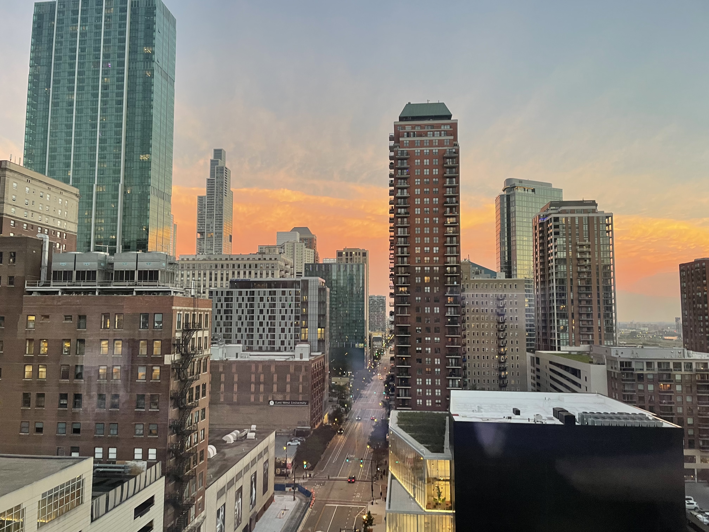
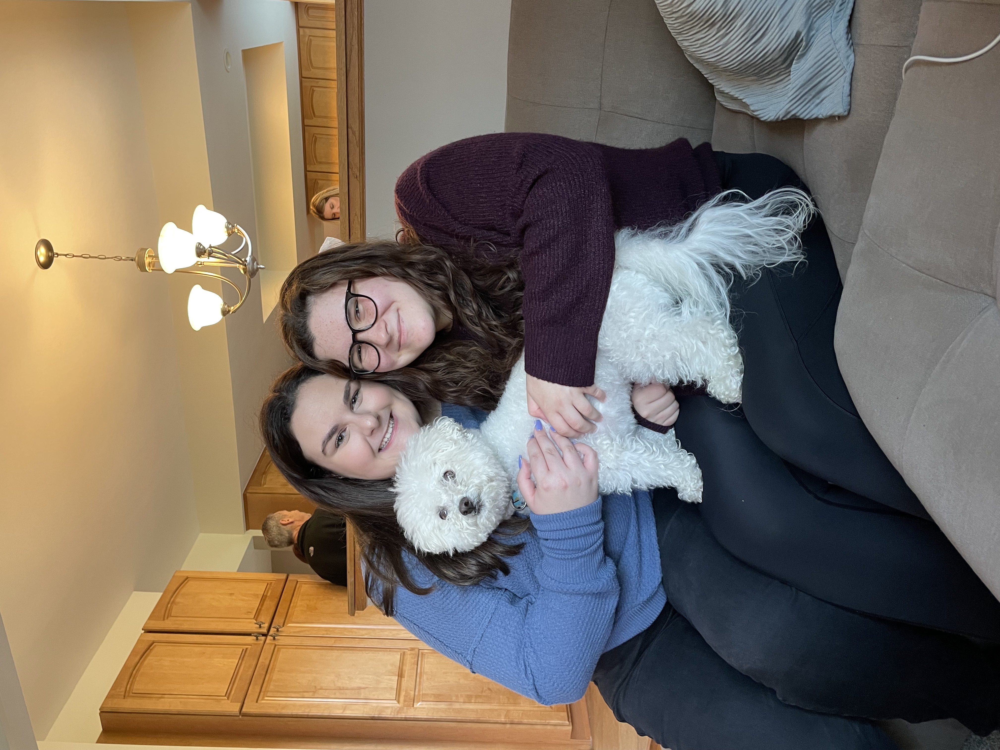
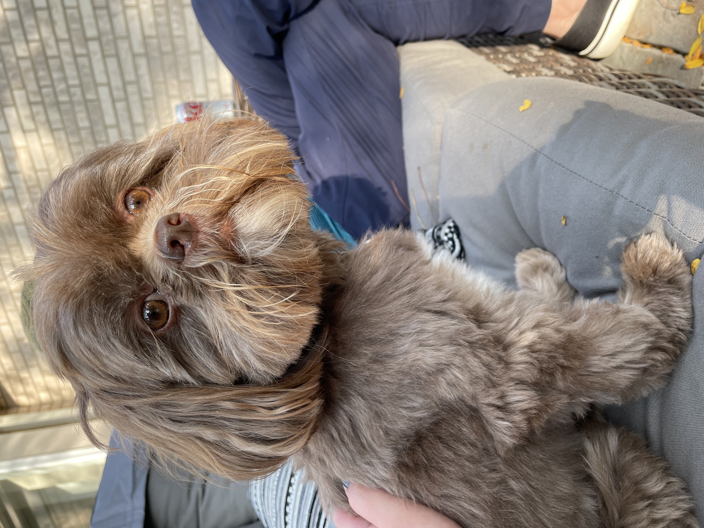

<----I strongly belive that there are few better feelings in the world than how you feel after a much needed haircut. That was me on this day.
I'm a senior at Columbia College Chicago, studying photography with a concentration in fashion (you wouldn't know by my love of sweatpants) and a minor in social media and digital strategies. I love food, and would say my dessert to real food ratio is probably 50/50. I love to make charcuterie boards, explore new Chicago neighborhoods and restaurants, and watch Big Brother. I love a good sunset, so I am incredibly grateful for my beautiful downtown view of Chicago.

I also really love cute little fluffy nuggets (what I like to call doggos). This is Teddy and his real human Evie (left), and Simon (right). Neither of them are mine, but maybe one day I will be the owner of their new BFF.
 